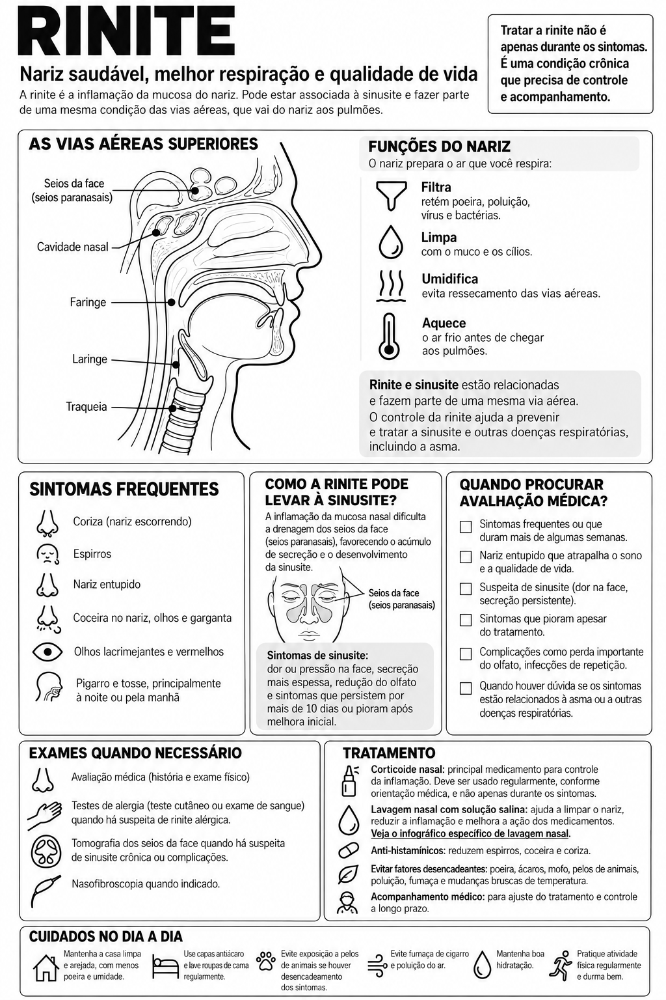

Rinite: nariz saudável, melhor respiração e qualidade de vida

Ler o texto do infográfico
A rinite é a inflamação da mucosa do nariz. Pode estar associada à sinusite e fazer parte de uma mesma condição das vias aéreas, que vai do nariz aos pulmões.
Tratar a rinite não é apenas durante os sintomas. É uma condição crônica que precisa de controle e acompanhamento.
Funções do nariz
O nariz prepara o ar que você respira:
- Filtra: retém poeira, poluição, vírus e bactérias.
- Limpa: com o muco e os cílios.
- Umidifica: evita ressecamento das vias aéreas.
- Aquece: o ar frio antes de chegar aos pulmões.
Rinite e sinusite estão relacionadas e fazem parte de uma mesma via aérea. O controle da rinite ajuda a prevenir e tratar a sinusite e outras doenças respiratórias, incluindo a asma.
Sintomas frequentes
- Coriza (nariz escorrendo)
- Espirros
- Nariz entupido
- Coceira no nariz, olhos e garganta
- Olhos lacrimejantes e vermelhos
- Pigarro e tosse, principalmente à noite ou pela manhã
Como a rinite pode levar à sinusite?
A inflamação da mucosa nasal dificulta a drenagem dos seios da face (seios paranasais), favorecendo o acúmulo de secreção e o desenvolvimento da sinusite.
Sintomas de sinusite: dor ou pressão na face, secreção mais espessa, redução do olfato e sintomas que persistem por mais de 10 dias ou pioram após melhora inicial.
Quando procurar avaliação médica?
- Sintomas frequentes ou que duram mais de algumas semanas.
- Nariz entupido que atrapalha o sono e a qualidade de vida.
- Suspeita de sinusite (dor na face, secreção persistente).
- Sintomas que pioram apesar do tratamento.
- Complicações como perda importante do olfato, infecções de repetição.
- Quando houver dúvida se os sintomas estão relacionados à asma ou a outras doenças respiratórias.
Exames quando necessário
- Avaliação médica (história e exame físico).
- Testes de alergia (teste cutâneo ou exame de sangue) quando há suspeita de rinite alérgica.
- Tomografia dos seios da face quando há suspeita de sinusite crônica ou complicações.
- Nasofibroscopia quando indicado.
Tratamento
- Corticoide nasal: principal medicamento para controle da inflamação. Deve ser usado regularmente, conforme orientação médica, e não apenas durante os sintomas.
- Lavagem nasal com solução salina: ajuda a limpar o nariz, reduzir a inflamação e melhora a ação dos medicamentos. Veja o infográfico específico de lavagem nasal.
- Anti-histamínicos: reduzem espirros, coceira e coriza.
- Evitar fatores desencadeantes: poeira, ácaros, mofo, pelos de animais, poluição, fumaça e mudanças bruscas de temperatura.
- Acompanhamento médico: para ajuste do tratamento e controle a longo prazo.
Cuidados no dia a dia
- Mantenha a casa limpa e arejada, com menos poeira e umidade.
- Use capas antiácaro e lave roupas de cama regularmente.
- Evite exposição a pelos de animais se houver desencadeamento dos sintomas.
- Evite fumaça de cigarro e poluição do ar.
- Mantenha boa hidratação.
- Pratique atividade física regularmente e durma bem.